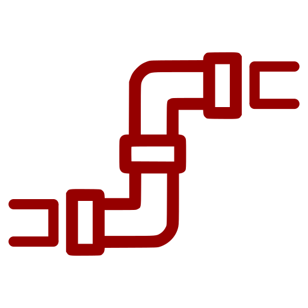
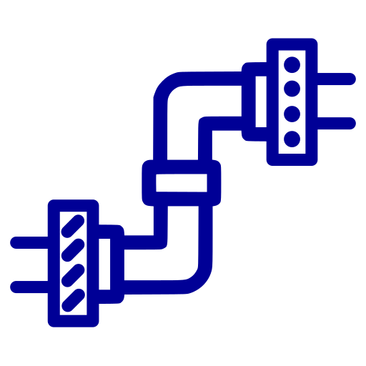
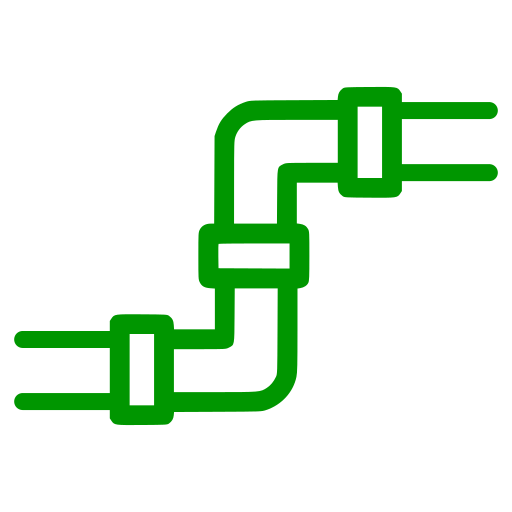

<section id="any_user" style="background-color: rgb(240, 240, 240)">
    <div class="container">
        <div class="row">
            <div class="col-xs-10 col-xs-offset-1
                        col-sm-8 col-sm-offset-2
                        col-md-6 col-md-offset-3
                        col-lg-4 col-lg-offset-4 text-center">
                <h2 class="section-heading">One Pipeline</h2>
                <hr class="primary">
            </div>
        </div>
        <div class="row">
            <div class="col-xs-10 col-xs-offset-1
                        col-sm-8 col-sm-offset-2
                        col-md-6 col-md-offset-3
                        col-lg-6 col-lg-offset-3 text-center">
                
                <div class="service-box">
                    <i class="overlay fa fa-4x wow fadeIn text-primary" data-wow-delay="3.6s">
                        
                    </i>
                    <i class="overlay fa fa-4x wow fadeIn text-primary" data-wow-delay="3.4s">
                        
                    </i>
                    <i class="overlay fa fa-4x wow fadeIn text-primary" data-wow-delay="3.2s">
                        
                    </i>
                    <i class="overlay fa fa-4x wow fadeIn text-primary" data-wow-delay="3.0s">
                        
                    </i>
                    <i class="overlay fa fa-4x wow fadeIn text-primary" data-wow-delay="2.8s">
                        
                    </i>
                    <i class="overlay fa fa-4x wow fadeIn text-primary" data-wow-delay="2.6s">
                        
                    </i>
                    <i class="overlay fa fa-4x wow fadeIn text-primary" data-wow-delay="2.4s">
                        
                    </i>
                    <i class="overlay fa fa-4x wow fadeIn text-primary" data-wow-delay="2.2s">
                        
                    </i>
                    <i class="overlay fa fa-4x wow fadeIn text-primary" data-wow-delay="2.0s">
                        
                    </i>
                    <i class="overlay fa fa-4x wow fadeIn text-primary" data-wow-delay="1.8s">
                        
                    </i>
                    <i class="overlay fa fa-4x wow fadeIn text-primary" data-wow-delay="1.6s">
                        
                    </i>
                    <i class="overlay fa fa-4x wow fadeIn text-primary" data-wow-delay="1.4s">
                        
                    </i>
                    <i class="overlay fa fa-4x wow fadeIn text-primary" data-wow-delay="1.2s">
                        
                    </i>
                    <i class="overlay fa fa-4x wow fadeIn text-primary" data-wow-delay="1.0s">
                        
                    </i>
                    <i class="overlay fa fa-4x wow fadeIn text-primary" data-wow-delay=".8s">
                        
                    </i>
                    <i class="overlay fa fa-4x wow fadeIn text-primary" data-wow-delay=".6s">
                        
                    </i>
                    <i class="overlay fa fa-4x wow fadeIn text-primary" data-wow-delay=".4s">
                        
                    </i>
                    <i class="overlay fa fa-4x wow fadeIn text-primary" data-wow-delay=".2s">
                        
                    </i>
                    <i class="overlay fa fa-4x wow fadeIn text-primary">
                        
                    </i>
                </div>
            </div>
        </div>
        <div class="row">
            <div class="col-xs-10 col-xs-offset-1
                        col-sm-4 col-sm-offset-0
                        col-md-4 col-md-offset-0
                        col-lg-4 col-lg-offset-0
                        text-center">
                
                <h3>Example</h3>
                <p class="text-muted">You want to provide tools for the higher level ML pipeline: data loading, distributed training, experiment tracking, logging, visualization etc.</p>
                <p class="text-muted">Writing these tools using a single framework would make the pipeline incompatible with all other frameworks</p>
            </div>
            <div class="col-xs-10 col-xs-offset-1
                        col-sm-4 col-sm-offset-0
                        col-md-4 col-md-offset-0
                        col-lg-4 col-lg-offset-0
                        text-center">
                
                <h3>Current Solution</h3>
                <p class="text-muted">Patch things together as best you can, with framework-specific subfolders, so that the codebase supports multiple frameworks where possible</p>
                <p class="text-muted">For example:
                    <a href="https://github.com/ray-project/ray/tree/bc3a1d35cf6e9a5fd7eef908a8e76aefb80ce6a9/rllib/models">RLlib</a>,
                    <a href="https://github.com/huggingface/transformers/tree/50d1867cf8f5d758b0f861d52ddf87b86a820076/examples">transformers</a>,
                    <a href="https://github.com/arogozhnikov/einops/tree/de53dcba7d01d43ba1cd97cd058f0643f3d62ab0/einops/layers">einops</a>,
                    <a href="https://github.com/dmlc/dgl/tree/4c14781427c28be8d6e4b9b99a1b17e11b51460a/python/dgl/backend">DGL</a>,
                    <a href="https://github.com/horovod/horovod/tree/7707267a4bef79e09a9df1d41b0652feb61b76c7/horovod">Horovod</a>,
                    <a href="https://github.com/determined-ai/determined/tree/a91866fdb1583ef647d78d4818bf6da8eedd7abe/harness/determined">Determined</a>,
                    <a href="https://github.com/PennyLaneAI/pennylane/tree/1a13bef8adfa85a86a7567f41294b3f73285a294/pennylane/interfaces">PennyLane</a>,
                    <a href="https://github.com/tensorly/tensorly/tree/8ecfd6e1dfbdfdde1cc6a3160863cd42b10cfb78/tensorly/backend">TensorLy</a>,
                    <a href="https://github.com/cvxgrp/cvxpylayers/tree/1238d2281ab3ec6751a0ac7d4c65a96b72651b33/cvxpylayers">cvxpylayers</a>
                </p>

            </div>
            <div class="col-xs-10 col-xs-offset-1
                        col-sm-4 col-sm-offset-0
                        col-md-4 col-md-offset-0
                        col-lg-4 col-lg-offset-0
                        text-center">
                
                <h3>Ivy Solution</h3>
                <p class="text-muted">Write your pipeline tools in Ivy</p>
                <p class="text-muted">Developers can use your pipeline with any framework, including ones not yet invented</p>
                <p class="text-muted">Anyone can step through your pipeline line-by-line when using it, regardless of framework</p>
            </div>
        </div>
    </div>
</section>
